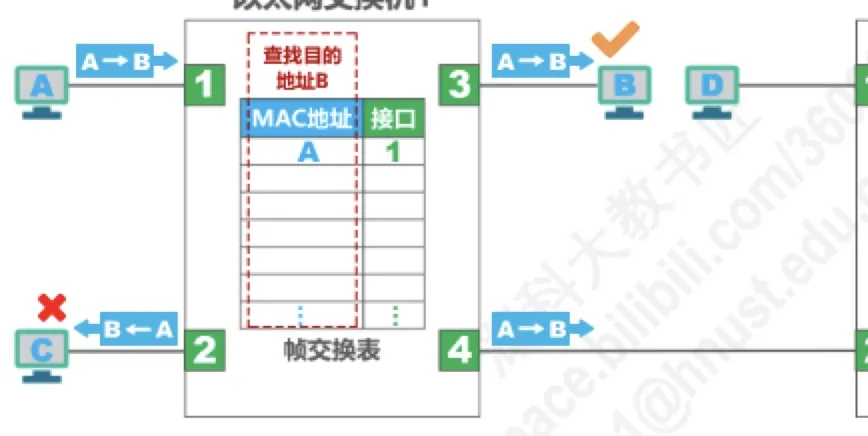
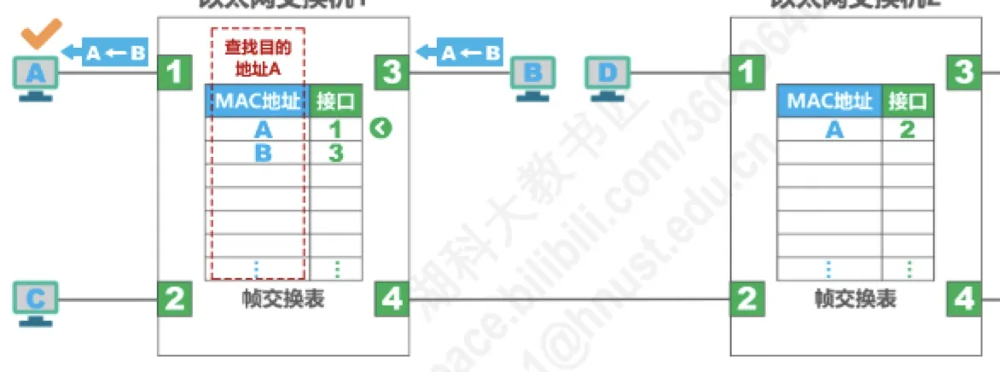
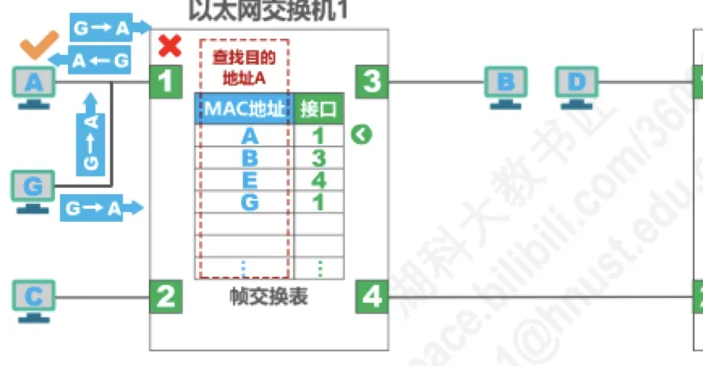
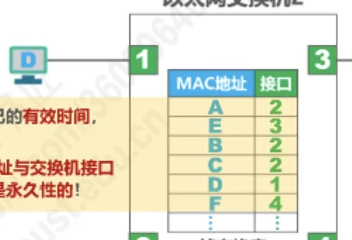
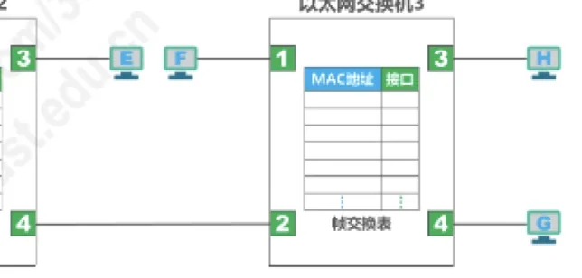
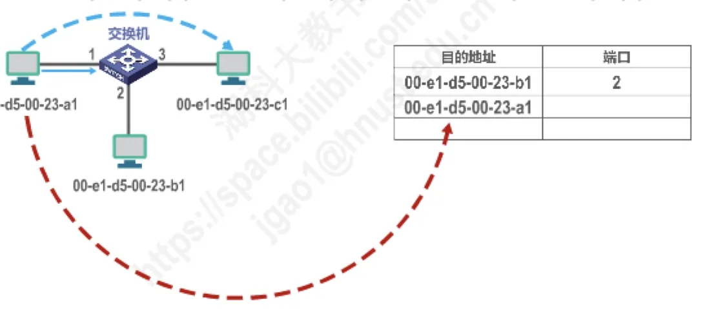

计算机通信与网络 · 第 3 章 数据链路层
3.9 以太网交换机自学习和转发帧的流程
上一节提到，以太网交换机的帧交换表是靠自学习算法自动建立起来的，这让它成为一台「即插即用」的设备。本节就把这套算法讲透：交换机每收到一个帧先做什么、再根据什么决定怎么转发，为什么有时要盲目泛洪、有时能明确转发、有时干脆丢弃，以及表中的记录为什么会过期失效。最后用两道历年真题检验理解。
1. 交换机为什么能「即插即用」
先把上一节的结论接过来：
- 以太网交换机工作在数据链路层（也包括物理层）；
- 它收到帧后，在帧交换表中查找帧的目的 MAC 地址所对应的接口号，然后通过该接口转发帧；
- 它是一种即插即用设备：刚上电启动时，内部的帧交换表是空的。随着网络中各主机间的通信，交换机通过自学习算法自动逐渐建立起帧交换表。
「表空的时候怎么转发」乍看有点奇怪，但正是这一点让交换机不需要人工配置。
2. 自学习与转发帧的流程
交换机的动作可以归纳为两步：先进来的帧一律先登记，再按目的地址决定转发方式。
- 登记：收到帧后进行登记，登记的内容为帧的源 MAC 地址及该帧进入交换机的接口号。道理很简单——既然这个源主机是从这个接口进来的，那么以后要发给它，就应该从这个接口出去。
- 转发：根据帧的目的 MAC 地址和交换机的帧交换表对帧进行转发，有以下三种情况：
- 明确转发：交换机知道应当从哪个（或哪些）接口转发该帧（单播、多播、广播）；
- 盲目转发：交换机不知道应当从哪个端口转发帧，只能将其通过除进入交换机的接口外的其他所有接口转发，也称为泛洪；
- 明确丢弃：交换机知道不应该转发该帧，将其丢弃。
（1）第一步：登记源 MAC 地址与接口号
假设各主机已经知道网络中其他主机的 MAC 地址（无需进行 ARP）。主机 A 发送帧给主机 B 时，帧到达交换机，交换机第一件事就是把它「记录在案」：源 MAC 地址 A，进入接口号某口。此时表中并没有 B 的记录，所以还必须盲目泛洪。

（2）盲目泛洪与明确转发
目的 MAC 地址 B 在表中查不到，交换机只能盲目泛洪，把帧从除进入接口以外的所有接口发出去。多台交换机级联时，每台交换机都各自重复「登记 + 泛洪」的动作，于是帧会扩散到整个广播域。
接下来 B 要回帧给 A。这一次情况不同了：交换机表中已经有「A——某接口」这条记录，于是交换机可以明确转发，只从 A 所连的那个接口把帧发出去，其余接口上的主机收不到这个帧。一收一回之后，交换机就学到了两台主机的所在位置。

（3）明确丢弃
第三种情况是明确丢弃：当交换机查表后发现，该帧应当从它进入交换机的那同一个接口转发出去——也就是说发送方和接收方在同一侧，帧根本没有必要经过交换机——此时交换机不会把它发回去，而是直接丢弃。

（4）记录为什么会过期
帧交换表中的每条记录都有自己的有效时间，到期自动删除。原因是 MAC 地址与交换机接口的对应关系并不是永久性的：
- 交换机的接口可能改接了另一台主机；
- 主机可能更换了网卡，MAC 地址随之改变。
若记录永不过期，交换机就会把帧发往错误的位置；过期删除之后，交换机重新通过泛洪和登记学习到新的对应关系，网络便自动适应了变化。

掌握这个流程后，就可以处理这类常见练习：给出一张多交换机拓扑（主机 A～H 的 MAC 地址与主机名相同）和一组依次进行的通信，要求写出各交换机每一步学到了什么、最终帧交换表的内容是什么。解题方法始终是同一套——每收到一个帧都先登记源 MAC 地址与进入接口，再看目的 MAC 地址是查得到（明确转发或丢弃）还是查不到（盲目泛洪）。

3. 两道历年真题
（1）交换机转发决策使用什么地址
2009 年题 36 问：以太网交换机进行转发决策时使用的 PDU 地址是什么？正确答案是目的物理地址（即目的 MAC 地址）。解析要点如下：
- PDU（Protocol Data Unit）的意思是协议数据单元，是计算机网络体系结构中对等实体间逻辑通信的对象；
- 以太网交换机工作在数据链路层（也包括物理层），它接收并转发的 PDU 通常称为帧；收到帧后，交换机在帧交换表中查找帧目的 MAC 地址所对应的接口号，再通过该接口转发帧；
- MAC 地址又称为硬件地址或物理地址。请注意：不要被「物理」二字误导而认为物理地址属于物理层范畴，物理地址属于数据链路层范畴。
（2）两个帧分别从哪些端口转发
2014 年题 34 给出一个交换机拓扑和交换机当前的转发表，主机 00-e1-d5-00-23-a1 向主机 00-31-d5-00-23-c1 发送 1 个数据帧，后者收到该帧后回发 1 个确认帧，问交换机对这两个帧的转发端口分别是哪一组。正确答案是 {2, 3} 和 {1}。

解析思路正是本节的两步流程：
- 数据帧从端口 1 进入交换机，交换机先登记源地址 a1 与端口 1；再查目的地址 c1，转发表中查不到，只能盲目泛洪，从除端口 1 以外的所有端口转发，即
{2, 3}； - 确认帧从端口 2 或 3 方向回来，其目的地址 a1 此时已在转发表中（对应端口 1），因此明确转发，只从端口 1 发出，即
{1}。
本节小结
- 交换机工作在数据链路层（也包括物理层），刚上电时帧交换表为空，靠自学习算法自动建立，因而即插即用；
- 自学习流程分两步：① 收到帧后进行登记，登记内容为帧的源 MAC 地址及进入交换机的接口号；② 根据帧的目的 MAC 地址和帧交换表转发；
- 转发有三种结果：明确转发（知道从哪个或哪些接口转发，适用于单播、多播、广播）、盲目转发（不知道出口，从除进入接口外的所有接口转发，也称泛洪）、明确丢弃（不该转发，直接丢弃）；
- 帧交换表的每条记录都有自己的有效时间，到期自动删除，因为接口可能改接主机、主机可能更换网卡，对应关系并非永久；
- 转发决策依据的是目的 MAC 地址（目的物理地址），它属于数据链路层而不是物理层；掌握「先登记源地址、再看目的地址」这两步，多交换机的学习过程题都可以按部就班地推出来。